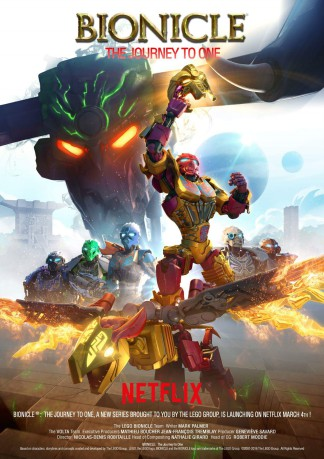

 
 IMDB-Wertung: 6.4 / 10
IMDB-Wertung: 6.4 / 10  Metascore: 0
Metascore: 0 
Sechs legendäre Helden begeben sich auf eine epische Mission, bei der sie die Kraft der Naturelemente nutzen, um die Kräfte des Bösen aufzuhalten.
Jahr: 2016
Dauer: 12 Minuten
FSK:
Land: USA Studio: NetflixTonspuren: - , - , - , - , - ,
Untertitel: Deutsch, Englisch,
Auflösung: 720p (1280x720) Größe: 386 MB
Genre: Action, Sci-Fi, Abenteuer, Fantasy, Animation/Trick, TV-Serie
Regisseur: Nicolas-D. Robitaille
Drehbuch:
Soundtrack:
Darsteller:
- William Jordan als Ekimu, 5 episodes, 2016
- Paolo Bryant als Pohatu, 4 episodes, 2016
- Michael Strickland als Umarak, 4 episodes, 2016
- Shailene Woodley » #96 on STARmeter CELEBS Born Today Celebrity News Most Popular Celebs PHOTOS Latest Stills Latest Posters Photos We Love EVENTS Awards Central Festival Central Oscars Golden Globes Sundance Cannes Comic-Con Emmy Awards Venice Film Festival Toronto Film Festival Tribeca SXSW All Events News & Community LATEST HEADLINES ‘The Tonight Show�� Cancels Norm MacDonald Appearance After Comedian’s #MeToo Comment 6 hours ago | Variety - TV News Summer 2018 Delivers $4.38 Billion in Domestic Grosses, Keeping Year on Record Pace 13 hours ago | Box Office Mojo Universal Launches ‘First Man’ Into Oscar Space And Also Fuels New Surprise Contender ‘Green Book’ To Upend The Race – Toronto Film Festival 14 hours ago | Deadline NEWS Top News Movie News TV News Celebrity News Indie News COMMUNITY Contributor Zone Polls Watchlist YOUR WATCHLIST if (!('imdb' in window)) window.imdb = ; window.imdb.watchlistTeaserData = href : /list/watchlist, src : https://m.media-amazon.com/images/G/01/imdb/images/navbar/watchlist_slot1_logged_out-1670046337._CB470041656_.jpg , href : /search/title?count=100&title_type=feature,tv_series, src : https://m.media-amazon.com/images/G/01/imdb/images/navbar/watchlist_slot2_popular-4090757197._CB470041610_.jpg , href : /chart/top, src : https://m.media-amazon.com/images/G/01/imdb/images/navbar/watchlist_slot3_top250-575799966._CB470041651_.jpg ; The essential resource for entertainment professionalsFind industry contacts & talent representationAccess in-development titles not available on IMDbGet the latest news from leading industry tradesClaim your page and control your brand across IMDb & AmazonTryIMDbProFreeTry IMDbPro Free | Help Sign in with Facebook Other Sign in options doWithAds(function()if ('injected_slot' != 'injected_slot') ad_utils.register_ad('injected_navstrip');); doWithAds(function()if ('injected_slot' == 'cornerstone_slot') ad_utils.inject_serverside_ad('injected_navstrip', '');else if ('injected_slot' == 'injected_slot') ad_utils.inject_ad.register('injected_navstrip'); else ad_utils.gpt.render_ad('injected_navstrip');, ad_utils not defined, unable to render client-side GPT ad or injected ad.); if (typeof uet == 'function') uet(ne); doWithAds(function()if ('injected_slot' != 'injected_slot') ad_utils.register_ad('injected_billboard');); doWithAds(function()if ('injected_slot' == 'cornerstone_slot') ad_utils.inject_serverside_ad('injected_billboard', '');else if ('injected_slot' == 'injected_slot') ad_utils.inject_ad.register('injected_billboard'); else ad_utils.gpt.render_ad('injected_billboard');, ad_utils not defined, unable to render client-side GPT ad or injected ad.); Edit Lego Bionicle: The Journey to One (2016– ) if ('csm' in window) csm.measure('csm_body_delivery_started'); Full Cast & Crew Series Directed by Nicolas-D. Robitaille als
- Nolan Balzer als Tahu, 4 episodes, 2016
- Jacqui Fox als Gali, 4 episodes, 2016
- Geoff Hughes als Lewa, 4 episodes, 2016
- Corny Rempel als Kopaka, 4 episodes, 2016
- Quinn Greene als Kivoda, 1 episode, 2016
Datei: X:\Kinder Collections\LEGO\LEGO Bionicle\LEGO Bionicle - Das Abenteuer beginnt S01E01.mkv seit 12.09.2018
Festplatte: Kinder-Filme+Trick
 Es gibt insgesamt 34 Filme in der Gruppe 'Kinder Collections\LEGO'
Es gibt insgesamt 34 Filme in der Gruppe 'Kinder Collections\LEGO'
")